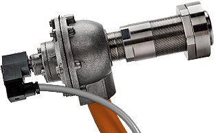
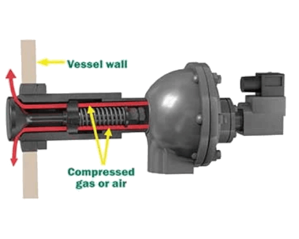

Do You Have a Blocked Silo?
AirSweep systems can help restore bulk-material flow
One of the common problems with bulk storage silos is bridging, where material builds up inside the vessel and eventually restricts or stops the flow.
IPT Engineering supports AirSweep material flow systems in the UK, providing a solution for difficult bulk-material flow applications.
AirSweep systems are designed to provide an on-demand flow of even difficult materials by helping eliminate bridging, ratholes and material build-up.
Each powerful pulse from an AirSweep nozzle directs a high-pressure, high-volume 360-degree burst of compressed air or gas between the material and vessel wall. This helps lift and sweep stagnant material back into the flow stream.
The patented nozzle design uses a single moving component and is designed to provide an immediate, dust-tight reseal after each pulse, helping prevent clogging and material feedback.
AirSweep systems can be installed on metal, concrete, fibreglass and wood vessels and are externally mounted for straightforward access to the equipment.

